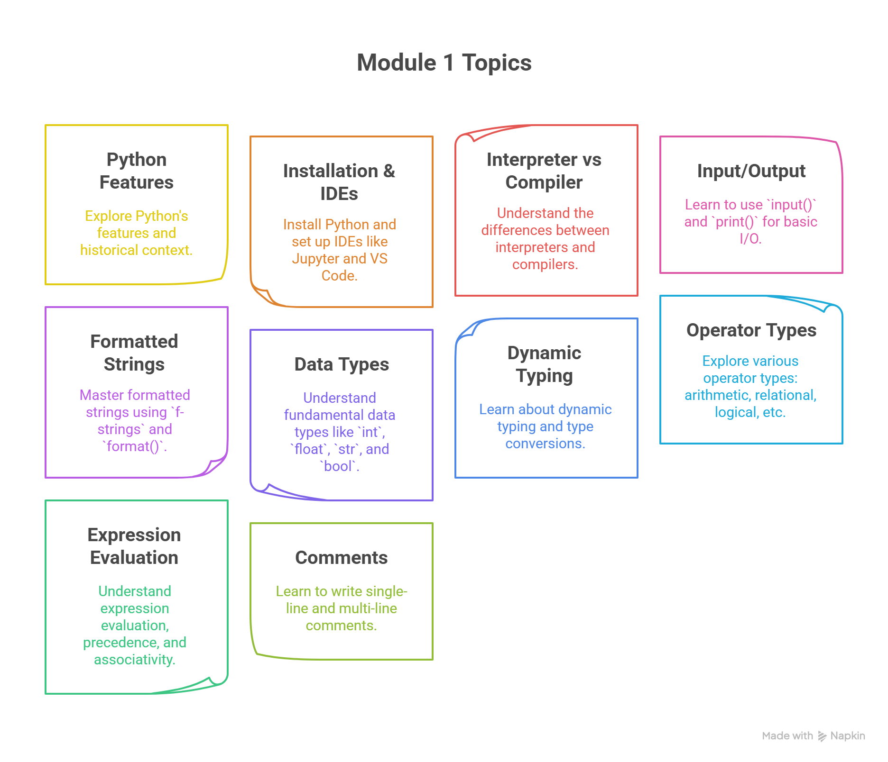

MBU MCA Python Course Content Documentation¶
Welcome to the official documentation for the MCA First-Year Python Programming course at Mohan Babu University. This documentation is based on the course content curated by Zaid Kamil for the 2025 batch.
Course Overview¶
This documentation is designed to help MCA first-year students master the essentials of Python programming. The course provides both conceptual clarity and practical exposure, with a blend of theoretical notes, code snippets, assignments, and mini projects.
Course Structure¶
Module 1: Introduction to Python, Input/Output and Operators (7 Periods)
{kind=link}
Features and history of Python
Installation & IDEs (Jupyter, VS Code)
Interpreter vs Compiler
Using input() and print()
Formatted strings (f-strings, format)
Data types: int, float, str, bool
Dynamic typing & type conversions (explicit, implicit)
Operator types: arithmetic, relational, logical, bitwise, assignment, membership, identity
Expression evaluation, precedence & associativity
Comments: single-line & multi-line
Module 2: Decision Making and Looping (7 Periods)
if,if-else,elif, nested conditionsLoops:
for,while,break,continue,passFunctions:
enumerate(),zip()elsewith loopsList and dictionary comprehensions
Combining loops with conditionals
Basic exception handling:
try-except
Module 3: Data Structures, Strings, Functions & Recursion (10 Periods)
Strings: creation, indexing, slicing, immutability
String methods:
upper(),lower(),find(),replace(),split(),join()Data structures: lists, tuples, dictionaries, sets
Function definition, parameters, return values, default/keyword arguments
Recursion (examples: factorial, Fibonacci)
Function integration with strings & collections
Lambda functions,
map(),filter()
Module 4: Object-Oriented Programming in Python (7 Periods)
Classes and objects
Instance variables and methods
Constructors (
__init__) & destructorsEncapsulation (public, protected, private)
Inheritance (types, method overriding)
Polymorphism
Abstraction (using
abcmodule)
Module 5: Data Visualization & Web Development (14 Periods)
Importance & purpose of data visualization
NumPy, Pandas, Matplotlib: line graphs, bar charts, histograms, scatter plots
Flask: overview, setup, app structure, routing
Template rendering with Jinja2
Form handling: GET/POST methods
Basic CRUD operations
HTML/CSS integration
Mini project implementation
Course Outcomes¶
After completion of this course, students will be able to:
Demonstrate knowledge of Python constructs, sequences, sets, and dictionaries to solve computational problems.
Apply regular expressions for pattern searching in strings.
Develop and use Python modules to solve problems.
Apply file operations in Python for file processing.
Design applications using OOP features: encapsulation, inheritance, polymorphism, and exception handling.
Work independently to solve problems and communicate effectively.
How to Use This Documentation¶
Each module has a dedicated section with lecture notes, code samples, and exercises.
Access the notes in reStructuredText format for easy reading and sharing.
Refer to the code samples and mini projects for hands-on practice.
Contributing¶
Contributions are welcome! If you find any issues or have suggestions for improvement, feel free to open an issue or submit a pull request.
License¶
This documentation is for educational purposes at Mohan Babu University. Please contact the maintainer for reuse or distribution outside the university.